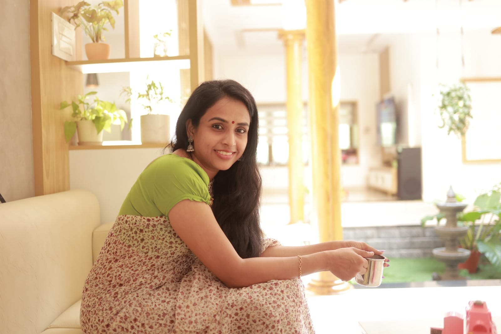
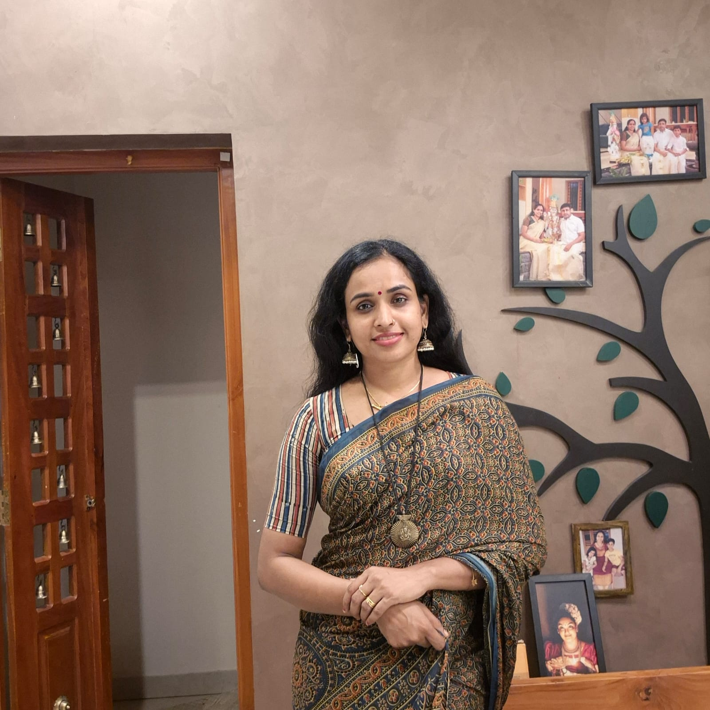

Meet Sruthy: Founder & Inspiration
Mrs. Sruthy is a multifaceted professional—Counselor, Health Educator, Entrepreneur, Dancer, Social Worker, and Certified Cosmetic Product Manufacturer. She has built a devoted community across major platforms, sharing her unique blend of health expertise and traditional knowledge. Her YouTube channel, Sruthy’s World, launched in 2019, has inspired thousands to embrace natural, homemade recipes for physical and mental well-being.

A Personal Journey
Sruthy’s passion for natural health stems from her own transformative journey. During her final year of internship as a Medical Social Worker, she realized that despite her professional success, her health was fragile. After years of undiagnosed health issues, she was finally diagnosed with Kikuchi-Fujimoto disease, an autoimmune disorder, in 2012.
Adopting a new lifestyle marked a turning point—her health improved dramatically. This powerful experience inspired Sruthy to dedicate her life to sharing natural remedies and holistic wellness tips with others.

The Growth of Sruthy’s Amma’s Herbal
In response to overwhelming demand from her YouTube community, Sruthy began offering homemade skin and hair care products. Her traditional recipes, passed down through generations, quickly gained popularity. Today, Sruthy’s Amma’s Herbal manufactures a wide range of products—including herbal oils, shampoos, and kajal—crafted with care and authenticity.
From 2020 , we have proudly served over 100,000 customers worldwide.
Our Product Range
Our extensive product lineup includes nourishing hair oils, shampoos, and conditioners, each formulated to strengthen hair and promote healthy growth. We harness the power of natural ingredients such as amla, brahmi, hibiscus, and bhringraj. We also offer a comprehensive range of skin care products, including face washes, moisturizers, and serums, featuring time-honored ingredients such as turmeric, neem, sandalwood, and aloe vera.
Our Commitment
At Sruthy’s Amma’s Herbal, we are dedicated to delivering exceptional service and support. We believe everyone deserves access to safe and effective natural remedies, and we are committed to making our products both affordable and accessible. We are also deeply committed to sustainability and ethical practices, from sourcing ingredients responsibly to ensuring eco-friendly packaging.
Our Mission
To provide high-quality, natural, and effective herbal and Ayurvedic products that empower individuals to improve their health and well-being, promoting the use of traditional, time-tested remedies.
Our Vision
To become a global leader in the manufacturing and supply of herbal and Ayurvedic products, raising awareness about the benefits of natural remedies and offering safe, effective, and affordable solutions.